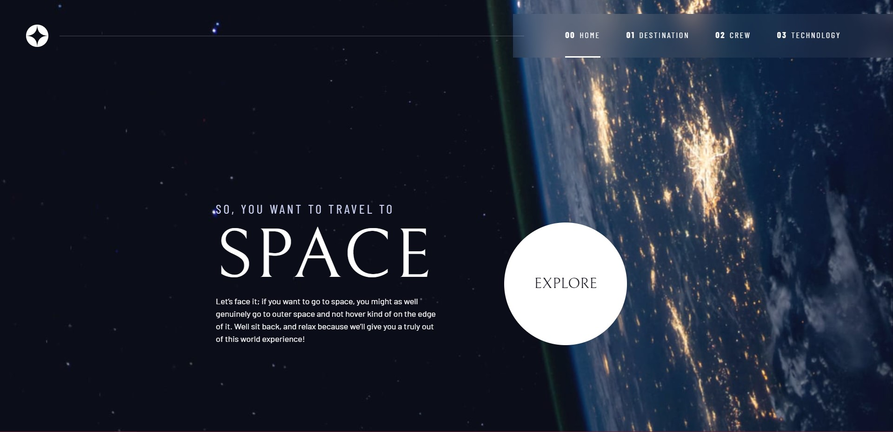
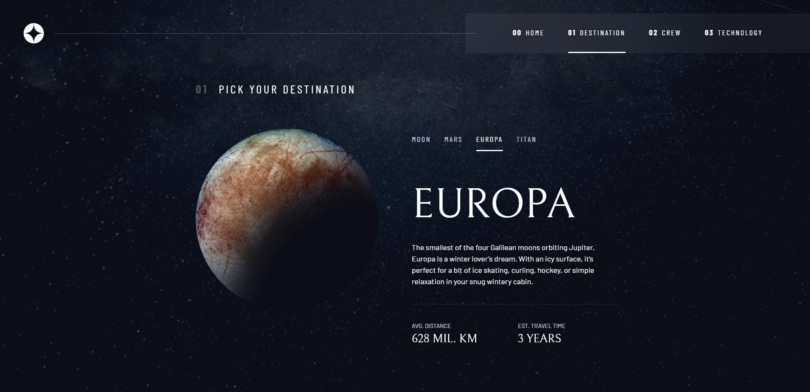
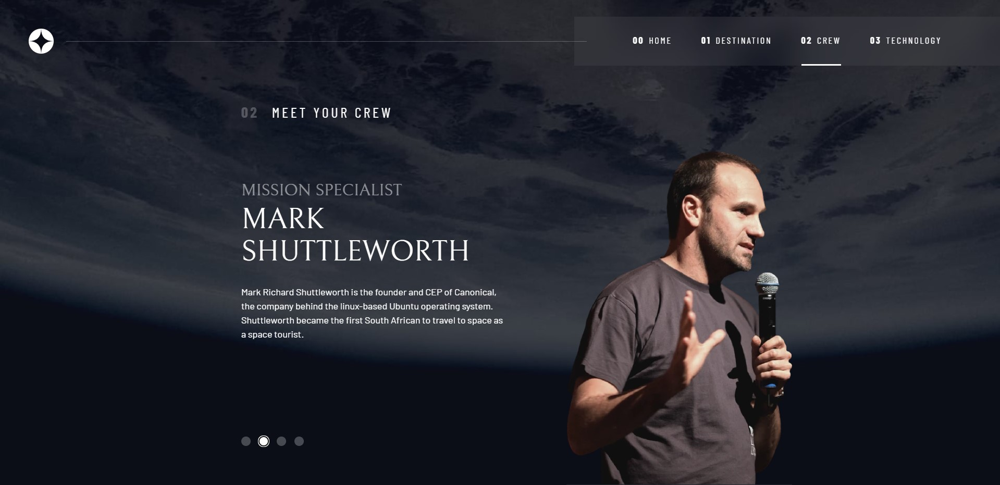

WeatherApp
Reacte API call practise
A personal challenge of mine was to make a weather application in react using a weather api. During this small project I learned the following:



A personal challenge of mine was to make a weather application in react using a weather api. During this small project I learned the following:


